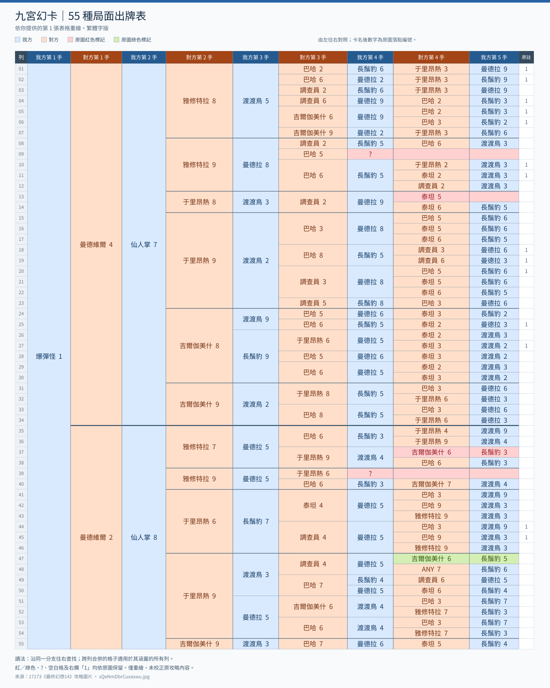

新放入的牌，接觸邊數字大於相鄰敵牌時即可翻牌。
Triple Triad · King Elmer III
幻卡王模擬器
你使用幻卡王完整 7 種可能卡面模擬 NPC 回應，電腦操作玩家的新手五張牌。攻略方先攻時，電腦會依「先手 95% 勝率打法＋55 種局面」自動出牌，並排除原表紅色敗局，讓你直接照著棋盤抄到遊戲內。
3 × 3 棋盤加算連攜55 局面攻略
格子編號：上排 1 2 3、中排 4 5 6、下排 7 8 9第 0 手
你操作：幻卡王 7 種可能卡面5
模擬操作盤：卡面可重複選擇，再點棋盤位置How it works
模擬規則
新牌與至少兩張相鄰牌的兩側數字總和相同時，會同時翻轉其中的敵牌。
因加算翻面的牌會再用一般規則向外翻牌，可能一次改變整個局面。
你可用完整 7 種卡面模擬幻卡王；電腦只從非紅色分支出牌。若 NPC 走入紅色敗局，會立即改用避敗計算。
查看 55 種局面原始出牌表攻略原表與模擬器相同：1、2、3 在最上排展開 ▾

表格依先前提供的 17173 攻略圖片重繪；第 9、13、37、39 列的紅色結局視為敗局，模擬器不會採用其後續出牌。攻略落點直接採用由左至右、由上至下的 1–9，沒有轉置；命中紅色敗局或表格無法決定時，會切換為避敗／即時計算。